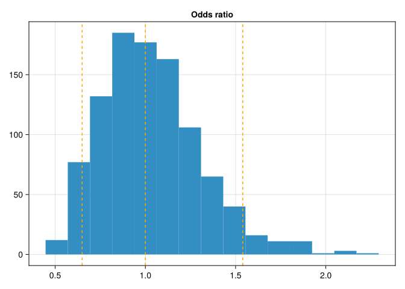
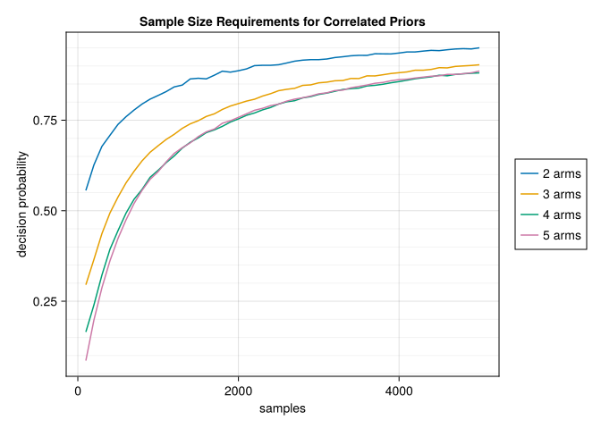
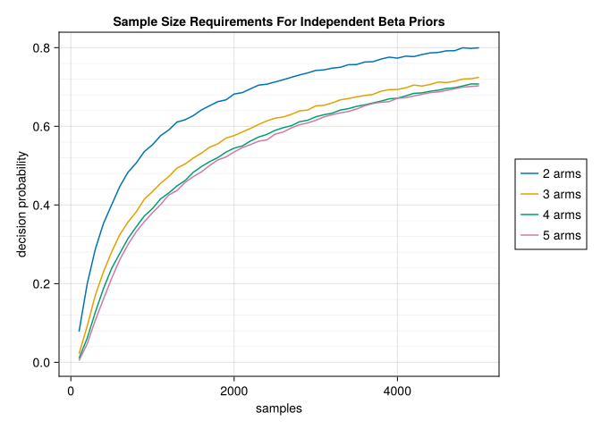

using LogExpFunctions, LinearAlgebra, Distributions, QuasiMonteCarlo, CairoMakie, StatsModels, PythonCall
CairoMakie.enable_only_mime!("png")This post highlights a Bayesian approach to sample size estimation in A/B/n testing. Say we’re trying to test which variant of an email message generates the highest response rate from a population. We consider \(k\) different messages and send out \(n\) emails for each message. After we wait for responses, we should be able to tell which message yielded the highest response rate as long as we set \(n\) high enough. But we generally can’t send out too many messages: say we’re capped at \(N\) total. How do we choose the highest \(k\) that still allows us to confidently pick which message got the highest response rate?
We’ll start with a prior over the response rates of each message. Choosing an independent prior over the rates for each message would be overly naive: all the messages will likely give very similar response rates, so if we know the rate for one message, we’ll have a good guess about the rates for other messages too. Instead, we’ll choose one message to be a baseline, giving it a response rate prior centered at 7%. We’ll sample independent multiples of this baseline to give the response rates for the other messages.
priors = [Normal(logit(0.07), 0.5), Normal(0, log(1.3))]2-element Vector{Normal{Float64}}:
Distributions.Normal{Float64}(μ=-2.5866893440979424, σ=0.5)
Distributions.Normal{Float64}(μ=0.0, σ=0.26236426446749106)function plot_prior(p, transform, title)
f = Figure()
ax = Axis(f[1, 1], title=title)
hist!(ax, transform.(rand(p, 1000)))
qs = transform.(quantile.(p, [0.05, 0.5, 0.95]))
vlines!(ax, qs, color=:orange, linestyle = :dash)
f
endplot_prior (generic function with 1 method)plot_prior(priors[1], logistic, "Control success probability")
plot_prior(priors[2], exp, "Odds ratio")
If the posterior odds ratios of the non-baseline messages all have 95% of their mass below 1.1, we’ll stick with the baseline message. If, instead, any of the messages has 95% of its posterior odds ratio mass above 1.1, we’ll choose one of those. If neither of these conditions occur, our experiment will have been a failure: we’ll remain too uncertain to make a decision of whether or not to switch from the baseline message. Our task is to choose the number of messages to ensure that we have high probability of running a successful experiment.
To find the posterior odds ratio for each message, we’ll use the Laplace approximation for Bayesian logistic regression. We’ll use Newton’s method to find the MAP.
function newton(f, x; maxiter=1000)
for _ in 1:maxiter
g, H = f(x)
if norm(g) < 1e-4
return (x, H)
else
x .-= H \ g
end
end
error("Maximum iterations reached")
endnewton (generic function with 1 method)The following code averages the decision probability over quasi Monte Carlo samples of possible datasets we might observe if the true parameters are given by θ.
function decision_prob(θ, n, k, prior_means, prior_precs; m=80)
X = [ones(k,1) StatsModels.ContrastsMatrix(DummyCoding(), 1:k).matrix]
dists = Binomial.(n, logistic.(X * θ))
samples = QuasiMonteCarlo.sample(m, k, SobolSample())
succs = stack([quantile.(d, s) for (d,s) in zip(dists, eachrow(samples))])
mean(eachrow(succs)) do succs
function gh(t)
y = logistic.(X * t)
vals = succs .* (y .- 1) .+ (n .- succs) .* y
g = [sum(vals); vals[2:end]] .+ (t .- prior_means) .* prior_precs
H = Diagonal(prior_precs) + sum(zip(y, eachrow(X))) do (yi, r)
n * yi * (1 - yi) * Symmetric(r * r')
end
g, H
end
mode, H = newton(gh, Vector(θ))
covar = inv(H)
c = cdf.(Normal.(mode[2:end], diag(covar)[2:end]), log(1.1))
Float32(all(c .> 0.95) | any(c .< 0.05))
end
enddecision_prob (generic function with 1 method)We also need to average the decision probability over our prior for θ.
function avg_decision_prob(total_n, k, m=80)
n = div(total_n, k)
samples = QuasiMonteCarlo.sample(m, k, SobolSample())
full_priors = [priors; fill(priors[2], k-2)]
prior_means = mean.(full_priors)
prior_precs = 1 ./ var.(full_priors)
prior_samples = stack([quantile.(p, c) for (p,c) in
zip(full_priors, eachrow(samples))])
mean(eachrow(prior_samples)) do θ
decision_prob(θ, n, k, prior_means, prior_precs)
end
endavg_decision_prob (generic function with 2 methods)Now, we can use these quasi Monte Carlo estimates to approximate how many messages we’ll be able to test for a given sample size.
let
f = Figure()
ax = Axis(f[1, 1],
yminorgridvisible=true,
yminorticks = IntervalsBetween(5),
title="Sample Size Requirements for Correlated Priors",
xlabel="samples", ylabel="decision probability")
ns = 100:100:5000
for k in 2:5
probs = avg_decision_prob.(ns, k)
lines!(ax, ns, probs, label="$k arms")
end
Legend(f[1, 2], ax)
f
end
Estimates From Independent Priors
If we had used a simple Beta-Bernoulli model assuming the each of the message rate priors were independent, our estimates of required sample size would be slightly inflated.
Previously, we used a Normal prior over the log odds of getting a response. But with a Beta distribution, we’ll want to model the probability of getting a response directly. Applying the logistic transformation to samples from a Normal distribution produces samples from a logit-normal distribution, which gives us the response probabilities we had in the first section.
qs = quantile(LogitNormal(params(priors[1])...), [0.05, 0.95])2-element Vector{Float64}:
0.032011773807213074
0.1462572912990306We’ll use the preliz python package to find a similar Beta distribution to use for our independent Beta prior.
pz = pyimport("preliz")/Users/sam/myblog/posts/bayesian_logistic_regression/.venv/lib/python3.13/site-packages/preliz/ppls/pymc_io.py:16: UserWarning: PyMC not installed. PyMC related functions will not work.
warnings.warn("PyMC not installed. PyMC related functions will not work.")
/Users/sam/myblog/posts/bayesian_logistic_regression/.venv/lib/python3.13/site-packages/preliz/ppls/agnostic.py:33: UserWarning: PyMC not installed. PyMC related functions will not work.
warnings.warn("PyMC not installed. PyMC related functions will not work.")Python: <module 'preliz' from '/Users/sam/myblog/posts/bayesian_logistic_regression/.venv/lib/python3.13/site-packages/preliz/__init__.py'>let
dist = pz.Beta()
pz.maxent(dist, lower=qs[1], upper=qs[2], mass=0.9)
dist
endPython: Beta(alpha=5.49, beta=55.4)
It seems like the Beta distribution parameters must comparable to our original setting are 5.49 and 55.4.
beta_prior = Beta(5.49, 55.4)Distributions.Beta{Float64}(α=5.49, β=55.4)Once again, we can simulate the decision probability for different numbers of samples. The curve looks similar to what we observed above, but while 4k samples got us to 95% previously, it now gets us below 80%.
function indep_decision_prob(p, n, k, prior_a, prior_b; m=80)
dists = Binomial.(n, p)
samples = QuasiMonteCarlo.sample(m, k, SobolSample())
succs = stack([quantile.(d, s) for (d,s) in zip(dists, eachrow(samples))])
mean(eachrow(succs)) do succs
posts = Beta.(prior_a .+ succs, prior_b .+ (n .- succs))
ps = stack(rand.(posts, m))
c = mean(Float64.((ps[:, 2:end] ./ ps[:, 1]) .< 1.1); dims=1)
Float64(all(c .> 0.95) | any(c .< 0.05))
end
endindep_decision_prob (generic function with 1 method)function avg_indep_decision_prob(total_n, k, m=80)
n = div(total_n, k)
samples = QuasiMonteCarlo.sample(m, k, SobolSample())
prior_params = params(beta_prior)
prior_samples = stack(quantile.(beta_prior, eachrow(samples)))
mean(eachrow(prior_samples)) do θ
indep_decision_prob(θ, n, k, prior_params[1], prior_params[1])
end
endavg_indep_decision_prob (generic function with 2 methods)let
f = Figure()
ax = Axis(f[1, 1],
yminorgridvisible=true,
yminorticks = IntervalsBetween(5),
title="Sample Size Requirements For Independent Beta Priors",
xlabel="samples", ylabel="decision probability")
ns = 100:100:5000
for k in 2:5
probs = avg_indep_decision_prob.(ns, k)
lines!(ax, ns, probs, label="$k arms")
end
Legend(f[1, 2], ax)
f
end